INT. ANYWHERE — WHENEVER
Screenwriting that fits in a pocket.
Scenarist formats your screenplay to industry standard as you type — scene headings, action, dialogue, parentheticals, transitions — on the phone you already carry. On iPad, the outline and your scripts sit beside the page. Free to start, no account, no ads.
Pocket draft, desk rewrite
Write the scene on the train and tighten it at the desk. With iCloud on, the same scripts are on your iPhone and your iPad, and nothing passes through a server of ours.
iPad
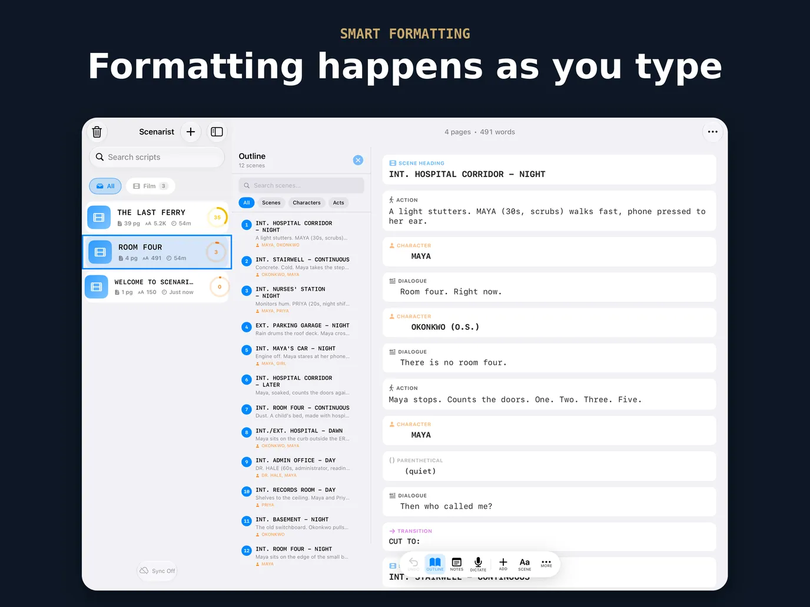
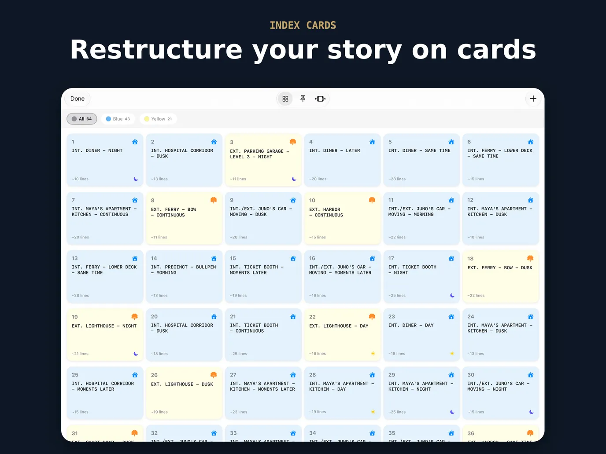
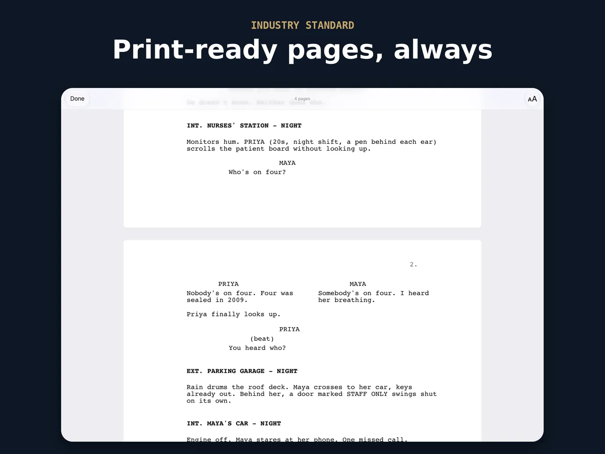
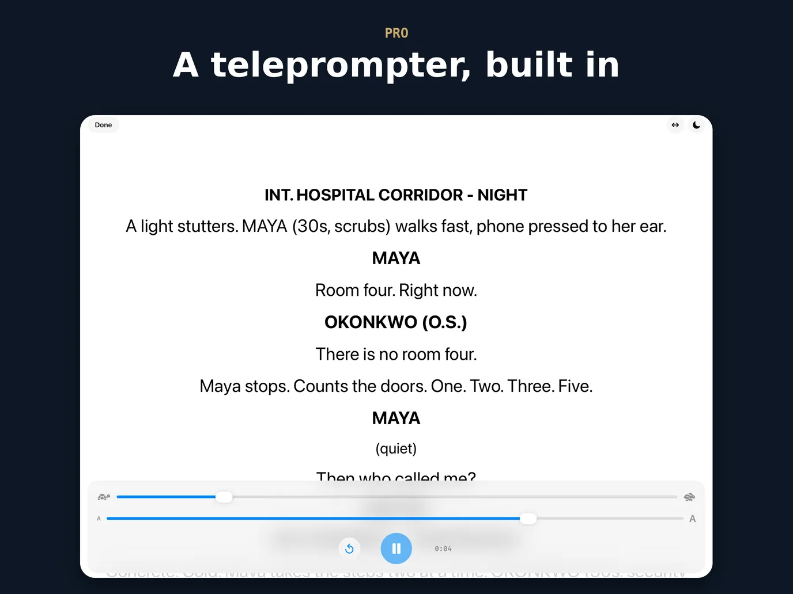
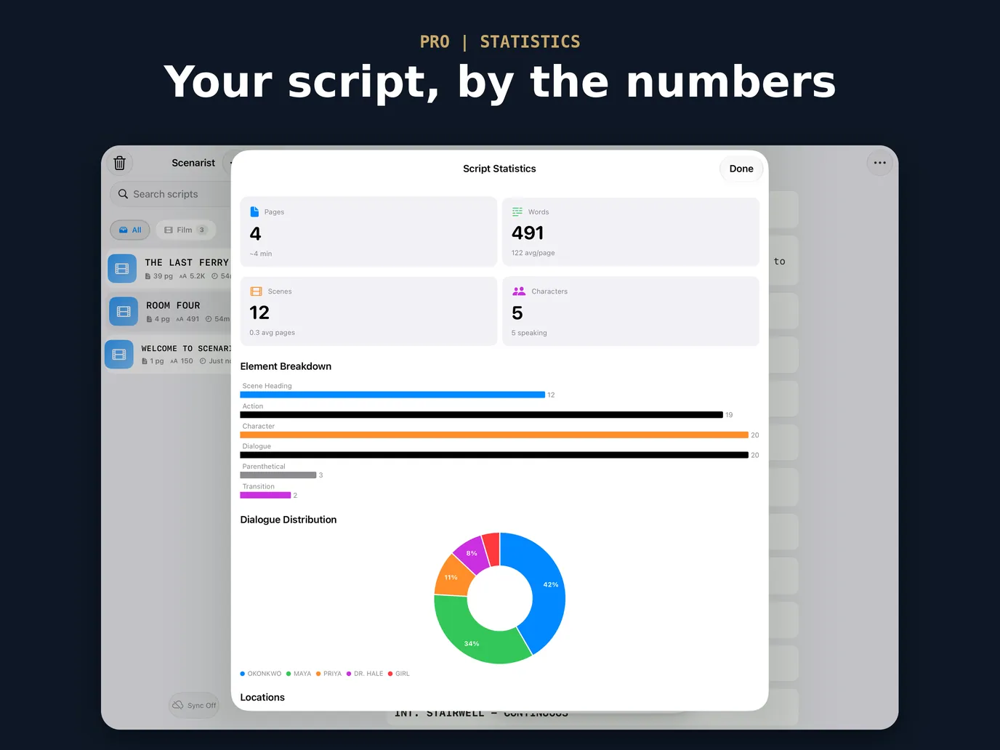
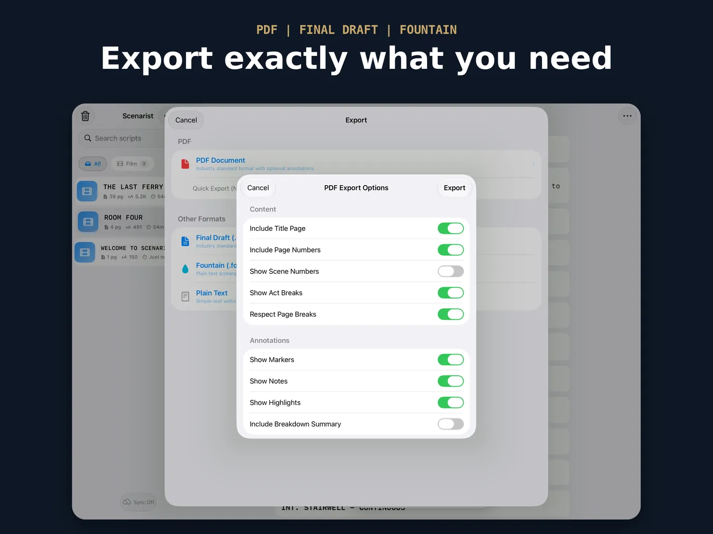
iPhone
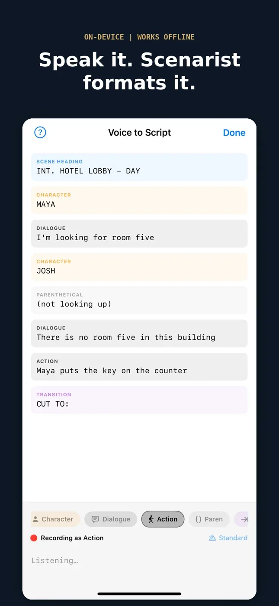
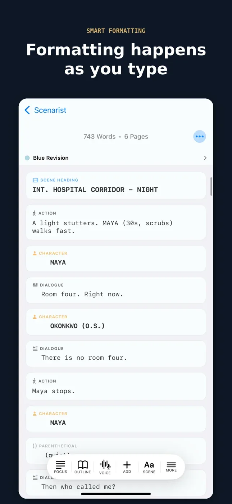
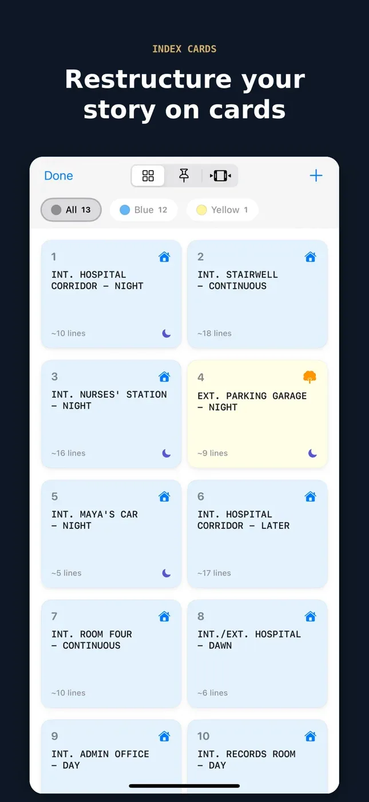
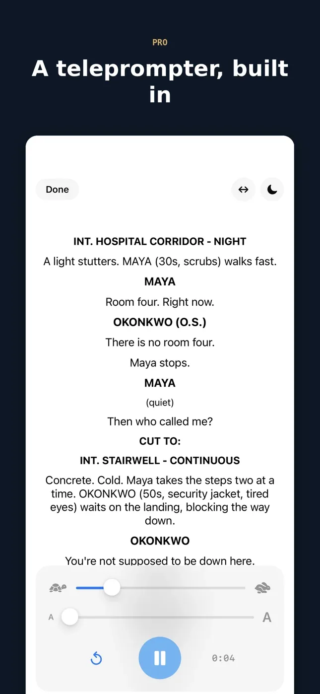
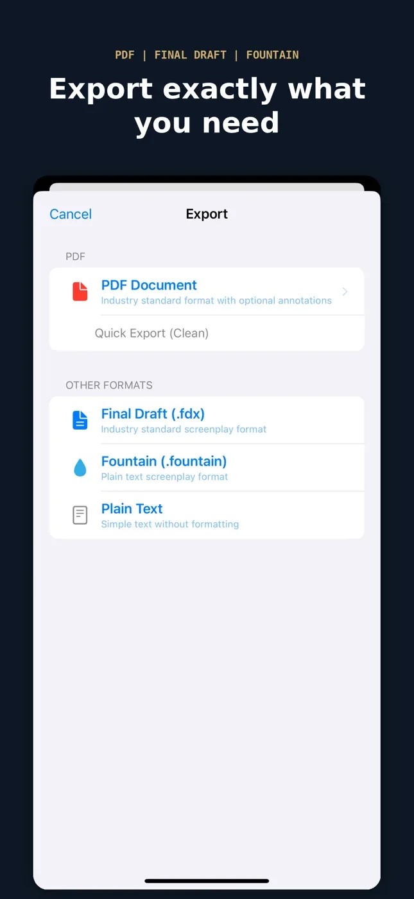
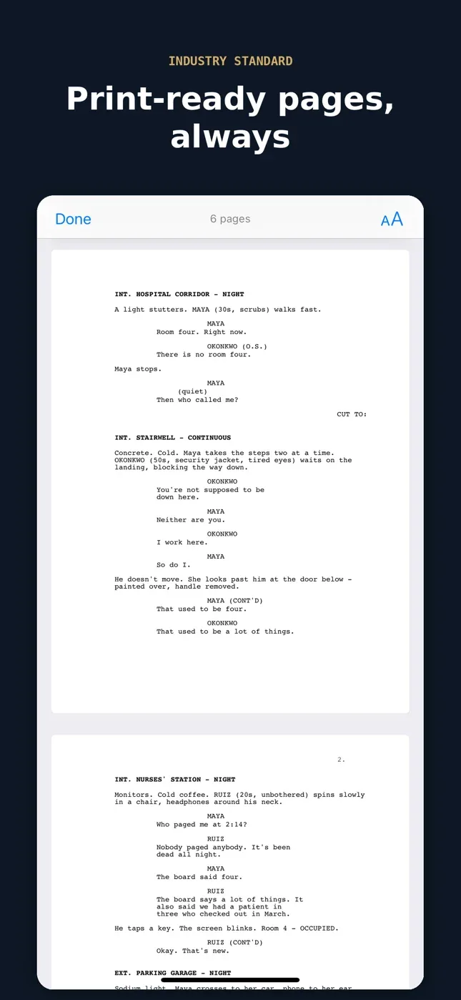
Free, with the whole editor
Three scripts, every tool
Up to three scripts at a time, with nothing in the editor held back. Pro lifts the cap.
Smart formatting
Elements land in the right place without you thinking about margins.
Autocomplete
Scene headings and character names fill themselves from what you have written.
Dual dialogue
Two characters at once, side by side in the editor and on the printed page.
Voice dictation
Say “interior coffee shop day”, get INT. COFFEE SHOP - DAY. On-device, works offline. Full hands-free dictation is in Pro.
Read aloud
Hear a scene back in a narrator voice before anyone else reads it.
PDF and Fountain export
Print-ready pages, or plain text that opens anywhere.
iCloud sync
Across your iPhone and iPad, through your own account. No sign-up here.
Had Scenarist before version 1.6? Your free plan keeps unlimited scripts.
Pro, when you need production tools
Unlimited scripts
Every draft, episode and spec scene you can write, all in one place.
Voice to Script
Say “character”, “dialogue”, “cut to” — and the page formats itself while you talk. Fully hands-free, on-device.
Final Draft export
Real .fdx for development and production workflows.
Clean PDFs
Free PDFs carry a small “Written with Scenarist” line at the foot of each page. Pro leaves it off.
Revision tracking
White, blue, pink, yellow, green, goldenrod — the sequence sets expect.
Index cards
Reorder scenes on a board when the structure stops working.
Teleprompter
Full-screen auto-scroll with mirror mode, for shoots and table reads.
Table read
A different voice for every character. Mute your own part and read it live.
Statistics
Pacing, element breakdown, and who actually talks.
Script preview
Paginated, print-ready pages before you send anything.
Monthly, annual, or a one-time Lifetime unlock — no subscription if you would rather not have one. Both plans start with a 7-day free trial.
Guides
Best iPhone screenwriting apps in 2026
Every app you can actually write a draft on, compared on price, mobile support, and export.
The seven screenplay elements
Scene heading through shot — what each part is for and how it is set.
What is Fountain?
The plain-text screenplay format, and why it outlives your software.
Revision colours, in order
White to cherry, locked pages, and asterisks — how production tracks change.
Your work stays yours
There is no account to create and no server holding your drafts. Scripts live on your device and sync through your personal iCloud if you turn it on. No tracking, no ads, no data collection.